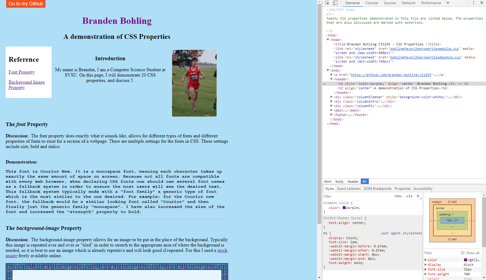

The font Property
Discussion:. The font property does exactly what it sounds like, allows for different types of fonts and different properties of fonts to exist for a section of a webpage. There are multiple settings for the fonts in CSS. These settings include size, bold and italics..
Demonstration:
This font is Courior New. It is a monospace font, meaning each character takes up exactly the same amount of space on screen. Because not all fonts are compatible with every web browser, when declaring CSS fonts one should use several font names as a fallback system in order to ensure the most users will see the desired text. This fallback system typically ends with a "font family" a generic type of font which is the most similar to the one desired. For example: for the Courior new font, the fallback would be a similar looking font called "Courior" and then finally just the generic family "monospace". I have also increased the size of the font and increased the "strength" property to bold.
The text-decoration Property
Discussion:. The text decoration property allows for underlines, overlines and crossthroughs for pieces of text. This property is useful if one wants to emphasize a certain word or cross it out. Many of the ways one can decorate text in CSS are fun or jump out in cool ways. For example, text decoration alse allows for wavy or dotted lines.
Demonstration:
This text has a wavy underline
This text has a dotted yellow cross through
This text has a purple overline
The background-image Property
Discussion:. The background-image property allows for an image to be put in the place of the background. Typically this image is repeated over and over or "tiled" in order to stretch to the appropriate area of where the background is needed, so it is best to use an image which is already repetitive and will look good if repeated. For this I used a stock image freely available online.
In this demonstration I made the image somewhat transluscent, as well as placed a secondary box around the transluscent image so the text is easier to read
The animation Property:
Discussion: The animation property allows for simple animations to be created. Typically such animations would be created through flash, which is now outdated and resource intensive. In this animation, CSS draws a box 100x100 pixels and transitions between the colors of my favorite sports team, the Denver Broncos. It will move in the direction of a square and each cycle of the animation will go for 3 seconds, this will repeat 5 times.
Here is the same animation, made to play in reverse
The transform Property:
Discussion: The transform property allows for elements to be shifted, tilted or scaled in certain directions. This particular box has been rotated 25 degrees and skewed in the x direction 20 degrees.
Chrome DevTools
Here's a screenshot of the web page title changing color to purple using Chrome DevTools.
